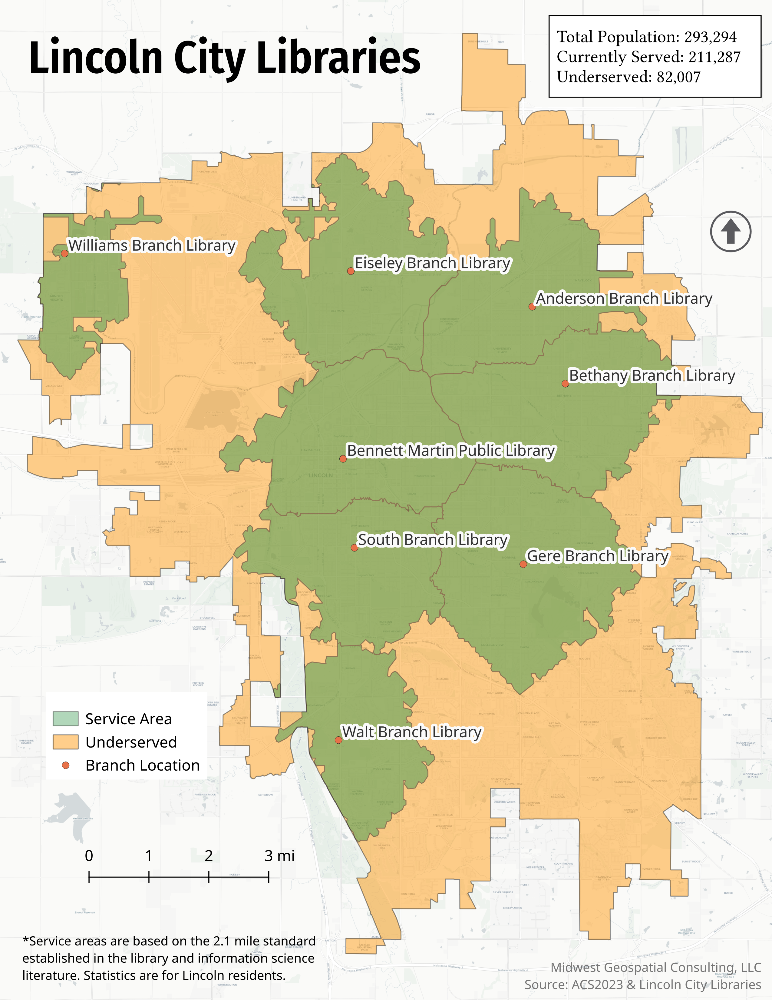

Hey, I'm Luke – a geospatial analyst, cartographer, and lifelong map enthusiast. I own Midwest Geospatial Consulting, LLC and am a proud Marine Corps veteran. I hold a B.S. in Geography from the University of Oregon along with professional GIS certification.
Tools Used: ArcGIS Pro, QGIS, Carto, Python, R
Recent Work
Potential Food Insecurity in Washington DC
This map presents a detailed visualization of potential food insecurity in Washington DC, highlighting areas where residents face challenges accessing affordable, nutritious food. By synthesizing data on supermarket locations, income levels, poverty rates, and population density, it identifies critical food deserts. Interactive overlays of public transportation further illustrate accessibility issues.
School Choice Initiative
This map advocates for school choice by displaying the percentage of public school students enrolled in charter schools across different districts. The varying shades clearly represent enrollment levels, offering insights into educational equity and alternative learning options.

Bicycle Safety Analysis
This map visualizes bicycle accidents relative to school locations in Lakewood, OH. Geocoded accident data and clustering analysis highlight hotspots, guiding city officials in improving cyclist safety.

Library Accessibility Analysis
This map evaluates public library accessibility in Lincoln, Nebraska, using a 2.1-mile standard to outline service areas. Color-coded zones identify well-served regions and areas needing better access, aiding future planning.

Campaign Targets
This national webmap, delineated by county, uses shading gradients to indicate the likelihood of collecting target voter signatures for ballot access. Combining recent voting patterns, demographic data, and polling insights, it offers strategic guidance for campaign outreach.
Houston Evacuation Map
This interactive webmap supports emergency planning for hurricane scenarios in Houston by overlaying evacuation routes with data on households lacking car access. It provides a critical resource for targeted disaster response and preparedness.


{kind=link}
{kind=link}
{kind=link}
{kind=link}